Use the actions of the day, not dress still lifes
A wedding film starts from what happened today: one morning action, two separate preparations, the ceremony whole, the first embrace after. One action per section, not equal coverage of every ritual.
Keep vows sync and pull the music back. The audience needs to hear what they said, not a song.
Limits
Do not write “happy forever” for them. A wedding film can be warm, but narration should not summarize their lives; leave one true line of their own.
On set
Cover the ceremony with two cameras: a wide for the flow, a close for hands and rings. Do not cut to slow motion during the vows.
Wedding film: protect the ceremony

Do this
A wedding film protects ceremony and vows before slow motion and grading; a missed ritual cannot be saved by style.
- Use two cameras: a wide master for the flow, a close-up for hands and rings.
- Keep vows complete without slow motion.
- Then add one quiet reaction shot.
Avoid
Do not use slow motion instead of emotion; slow is not deep.
Image note. Covers, diagrams and step images on this page are editorial illustrations or structure diagrams, not photographs of a test performed here; they are not evidence of measured gear performance. Where an image is AI-assisted, the caption says so. Read the test conditions in the text before treating an image as proof.